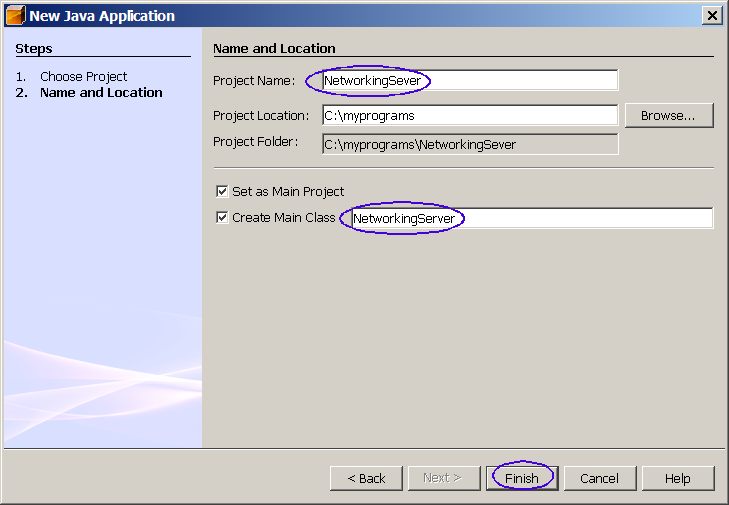
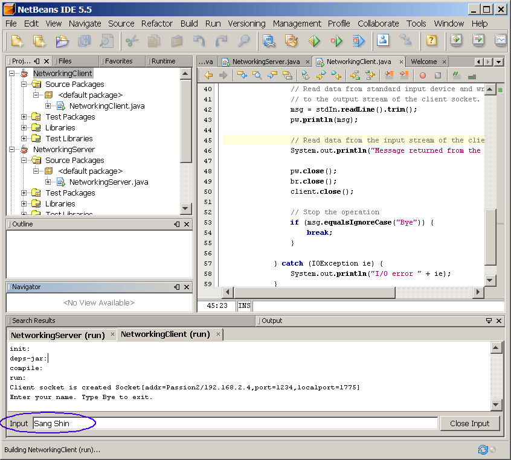
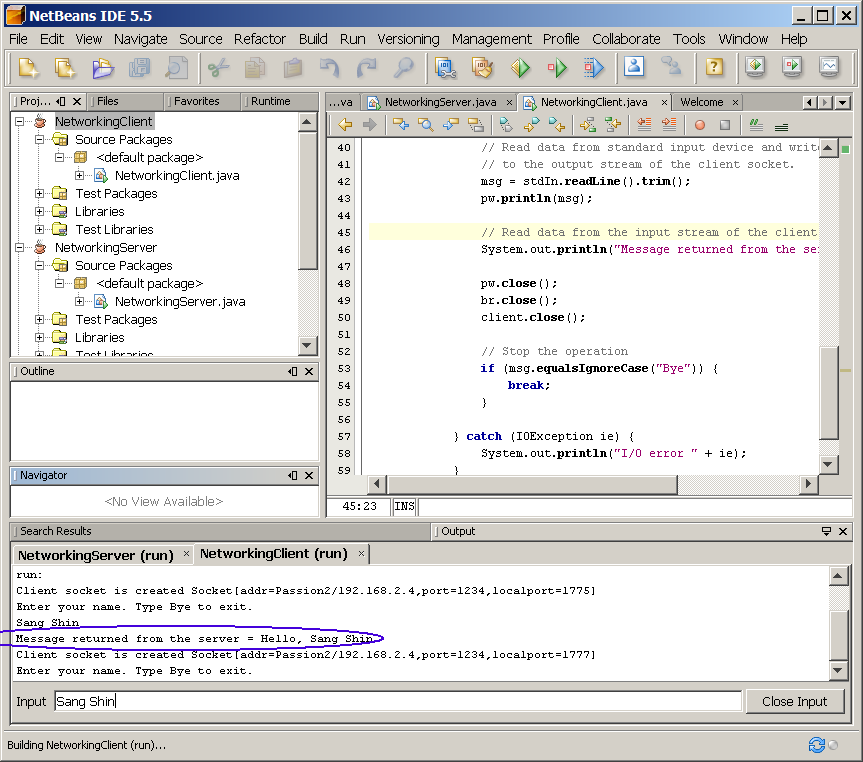
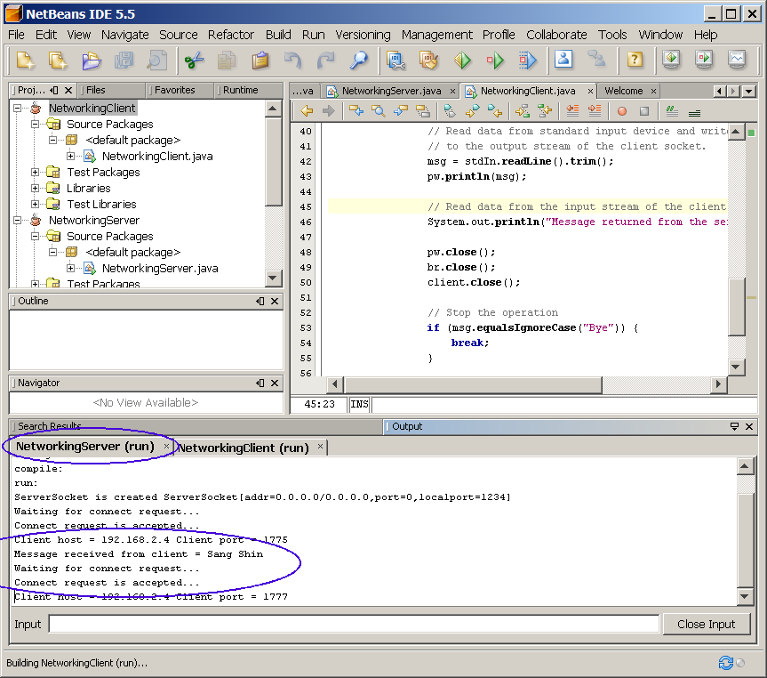
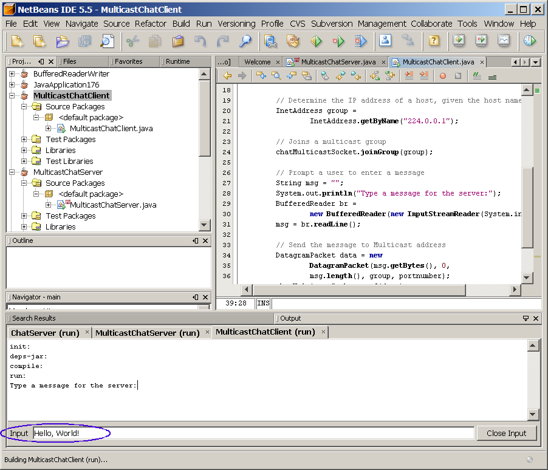

Java Networking
This hands-on lab takes you through the basics of using Java
networking.
Expected duration: 60 minutes
Software Needed
Before you begin, you need to install the following software on your
computer.
- Java Standard Development Kit (JDK™) version 5.0 (download)
- If you already have installed JDK 5.0, you
can skip this.
- The name of the installation file is as following (for JDK 5.0
update x)
- jdk-1_5_0_xx-windows-i586-p.exe (Windows)
- jdk-1_5_0_xx-linux-i586.bin (Linux)
- jdk-1_5_0_xx-solaris-i586.sh (Solaris x86)
- NetBeans IDE 5.5 (download)
- When you install NetBeans IDE 5.5, it will ask you which JDK
you want to use.
- 1026_javanetworking.zip (download)
- It contains this document and the lab contents
- Download it and unzip in a directory of your choice
Change Log
- Feb. 27th, 2007: Created
- April 27th, 2007: Homework is created
- May 2nd, 2007: Homework is removed for now. There is no homework.
Lab Exercises
Exercise 1: Writing Client and Server
(1.1)
Build and run the server side code
0. Start NetBeans IDE if you have not done so yet.
1. Create a new NetBeans project
- Select File->New Project (Ctrl+Shift+N). The New Project dialog box appears.
- Under Choose Project
pane,
select General under Categories and Java Application under Projects. Click Next.
- Under Name and Location
pane, for the Project Name
field, type in NetworkingServer as
project name.
- For Create Main Class
field, type in NetworkingServer.
(Figure-1.10 below)
- Click Finish.

Figure-1.10: Create a new project
- Observe that NetworkingServer project
appears and IDE generated NetworkingServer.java
is displayed in the source editor window of NetBeans IDE.
2. Modify the IDE generated
NetworkingServer.java
as shown in Code-1.11 below. Study the code by paying
special attention to the bold fonted parts.
/* SERVER – may enhance to work
for multiple clients */
import java.net.*;
import java.io.*;
import java.util.*;
public class NetworkingServer {
public static void main(String [] args) {
ServerSocket server = null;
Socket client;
// Default port number we
are going to use
int portnumber = 1234;
if (args.length >= 1){
portnumber = Integer.parseInt(args[0]);
}
// Create Server side socket
try {
server = new ServerSocket(portnumber);
} catch (IOException ie) {
System.out.println("Cannot open socket." + ie);
System.exit(1);
}
System.out.println("ServerSocket is created " + server);
// Wait for the data from
the client and reply
while(true) {
try {
// Listens for a connection to be made to
// this socket and accepts it. The method blocks until
// a connection is made
System.out.println("Waiting for connect request...");
client = server.accept();
System.out.println("Connect request is accepted...");
String clientHost = client.getInetAddress().getHostAddress();
int clientPort = client.getPort();
System.out.println("Client host = " + clientHost + " Client port = " +
clientPort);
// Read data from the client
InputStream clientIn = client.getInputStream();
BufferedReader br = new BufferedReader(new
InputStreamReader(clientIn));
String msgFromClient = br.readLine();
System.out.println("Message received from client = " + msgFromClient);
// Send response to the client
if (msgFromClient != null &&
!msgFromClient.equalsIgnoreCase("bye")) {
OutputStream clientOut = client.getOutputStream();
PrintWriter pw = new PrintWriter(clientOut, true);
String ansMsg = "Hello, " + msgFromClient;
pw.println(ansMsg);
}
// Close sockets
if (msgFromClient != null &&
msgFromClient.equalsIgnoreCase("bye")) {
server.close();
client.close();
break;
}
}
catch (IOException ie) {
}
}
}
}
|
Code-1.11: NetworkingServer.java
3. Build and run the project
- Right click NetworkingServer project
and select Run Project.
- Observe that the server is waiting for a connection request from
a
client in the Output window.
(Figure-1.13 below)
ServerSocket is created
ServerSocket[addr=0.0.0.0/0.0.0.0,port=0,localport=1234]
Waiting for connect request...
|
Figure-1.13: Result of running NetworkingSever application
Solution:
This exercise up to this point is provided as a ready-to-open-and-run
NetBeans project as part of hands-on lab zip file. You can find it as
<LAB_UNZIPPED_DIRECTORY>/javanetworking/samples/NetworkingServer.
You can just open it and run it.
(1.2)
Build and run the client side code
1. Create a new NetBeans project
- Select File->New Project (Ctrl+Shift+N). The New Project dialog box appears.
- Under Choose Project
pane,
select General under Categories and Java Application under Projects. Click Next.
- Under Name and Location
pane, for the Project Name
field, type in NetworkingClient as
project name.
- For Create Main Class
field, type in NetworkingClient.
- Click Finish.
- Observe that NetworkingClient project
appears and IDE generated NetworkingClient.java
is displayed in the source editor window of NetBeans IDE.
2. Modify the IDE generated
NetworkingClient.java
as shown in Code-1.21 below. Study the code by paying
special attention to the bold fonted parts.
/* CLIENT */
import java.io.*;
import java.net.*;
public class NetworkingClient {
public static void main(String args[]) {
Socket client = null;
// Default port number we
are going to use
int portnumber = 1234;
if (args.length >= 1){
portnumber = Integer.parseInt(args[0]);
}
for (int i=0; i <10; i++)
{
try {
String msg = "";
// Create a client socket
client = new Socket(InetAddress.getLocalHost(), portnumber);
System.out.println("Client socket is created " + client);
// Create an output stream of the client socket
OutputStream clientOut = client.getOutputStream();
PrintWriter pw = new PrintWriter(clientOut, true);
// Create an input stream of the client socket
InputStream clientIn = client.getInputStream();
BufferedReader br = new BufferedReader(new
InputStreamReader(clientIn));
// Create BufferedReader for a standard input
BufferedReader stdIn = new BufferedReader(new
InputStreamReader(System.in));
System.out.println("Enter your name. Type Bye to exit. ");
// Read data from standard input device and write it
// to the output stream of the client socket.
msg = stdIn.readLine().trim();
pw.println(msg);
// Read data from the input stream of the client socket.
System.out.println("Message returned from the server = " +
br.readLine());
pw.close();
br.close();
client.close();
// Stop the operation
if (msg.equalsIgnoreCase("Bye")) {
break;
}
}
catch (IOException ie) {
System.out.println("I/O error " + ie);
}
}
}
}
|
Code-1.21: NetworkingClient.java
3. Build and run the project
- Right click NetworkingClient project
and select Run Project.
- Observe the client is prompting you to enter your name.
(Figure-1.23 below)
Client socket is created
Socket[addr=Passion2/192.168.2.4,port=1234,localport=1775]
Enter your name. Type Bye to exit.
|
Figure-1.23: Waiting for the user to enter name
Trouble-shooting: If you
see the following exception, it is highly likely that either you have
not started the server or if you started the server, the firewall on
your system blocks the incoming connection request.
I/O error
java.net.ConnectException: Connection refused: connect
I/O error java.net.ConnectException: Connection refused: connect
I/O error java.net.ConnectException: Connection refused: connect
I/O error java.net.ConnectException: Connection refused: connect
|
Figure-1.24: Error condition
Solution: Make sure the server is run first. Also make sure the
firewall on your system is turned off.
- Enter your name into the Input field,
like Sang Shin in this example, and press Enter key. (Figure-1.25 below)

Figure-1.25: Enter your name
- Observe that the server responds back with "Hello, Sang Shin".
(Figure-1.26 below)
- Enter a few more names and observe that the server kept sending
back responses.

Figure-1.26: Respons from the server.
- In order to close the connection with the server, type Bye.
4. Observe the server side.
- Click NetworkingServer (run) tab to see the Output window of the
server side.
- Observe that the server received a message, Sang Shin in this
example. (Figure-1.27 and Figure-1.28 below.)
ServerSocket is created
ServerSocket[addr=0.0.0.0/0.0.0.0,port=0,localport=1234]
Waiting for connect request...
Connect request is accepted...
Client host = 192.168.2.4 Client
port = 1775
Message received from client =
Sang Shin
Waiting for connect request...
Connect request is accepted...
Client host = 192.168.2.4 Client port = 1777
|
Figure-1.27: Client connection request is accepted and message is
received

Figure-1.28: Client connection request is accepted and message is
received
Solution:
This exercise up to this point is provided as a ready-to-open-and-run
NetBeans project as part of hands-on lab zip file. You can find it as
<LAB_UNZIPPED_DIRECTORY>/javanetworking/samples/NeworkingClient.
You can just open it and run it.
return to top of the
exercise
Summary
In this exercise, you learned how to build and run a simple Hello
server and client using Networking API.
Exercise 2: Writing Multicast Client and
Server
(2.1)
Build and run the server side code
1. Create a new NetBeans project
- Select File->New Project (Ctrl+Shift+N). The New Project dialog box appears.
- Under Choose Project
pane,
select General under Categories and Java Application under Projects. Click Next.
- Under Name and Location
pane, for the Project Name
field, type in MulticastChatServer as
project name.
- For Create Main Class
field, type in MulticastChatServer.
- Observe that MulticastChatServer
project
appears and IDE generated MulticastChatServer.java
is displayed in the source editor window of NetBeans IDE.
2. Modify the IDE generated
MulticastChatServer.java
as shown in Code-2.11 below. Study the code by paying
special attention to the bold fonted parts.
import java.net.*;
public class MulticastChatServer {
public static void main(String args[])
throws Exception {
// Default port number we
are going to use
int portnumber = 1236;
if (args.length >= 1){
portnumber = Integer.parseInt(args[0]);
}
// Create a MulticastSocket
MulticastSocket serverMulticastSocket =
new MulticastSocket(portnumber);
System.out.println("MulticastSocket is created...");
// Determine the IP address of a host, given the host name
InetAddress group =
InetAddress.getByName("224.0.0.1");
// getByName- returns IP address of given host
serverMulticastSocket.joinGroup(group);
System.out.println("joinGroup method is called...");
boolean infinite = true;
// Continually receives data and prints them
while(infinite) {
byte buf[] = new byte[1024];
DatagramPacket data =
new DatagramPacket(buf, buf.length);
serverMulticastSocket.receive(data);
String msg =
new String(data.getData()).trim();
System.out.println("Message received from client = " + msg);
}
serverMulticastSocket.close();
}
}
|
Code-2.11: MulticastChatServer.java
3. Build and run the project
- Right click MulticastChatServer
project
and select Run Project.
- Observe that the server is waiting for a datagram message from a
client in the Output window.
(Figure-2.12 below)
MulticastSocket is created...
joinGroup method is called...
|
Figure-2.12: Waiting for a message from a client
Solution:
This exercise up to this point is provided as a ready-to-open-and-run
NetBeans project as part of hands-on lab zip file. You can find it as
<LAB_UNZIPPED_DIRECTORY>/javanetworking/samples/MulticastChatServer.
You can just open it and run it.
(2.2)
Build and run the client side code
1. Create a new NetBeans project
- Select File->New Project (Ctrl+Shift+N). The New Project dialog box appears.
- Under Choose Project
pane,
select General under Categories and Java Application under Projects. Click Next.
- Under Name and Location
pane, for the Project Name
field, type in MulticastChatClient as
project name.
- For Create Main Class
field, type in MulticastChatClient.
- Click Finish.
- Observe that MulticastChatClient
project
appears and IDE generated MulticastChatClient.java
is displayed in the source editor window of NetBeans IDE.
2. Modify the IDE generated
MulticastChatClient.java
as shown in Code-2.21 below. Study the code by paying
special attention to the bold fonted parts.
import java.net.*;
import java.io.*;
public class MulticastChatClient {
public static void main(String args[])
throws Exception {
// Default port number we
are going to use
int portnumber = 1236;
if (args.length >= 1){
portnumber = Integer.parseInt(args[0]);
}
// Create a MulticastSocket
MulticastSocket chatMulticastSocket = new MulticastSocket(portnumber);
// Determine the IP address
of a host, given the host name
InetAddress group =
InetAddress.getByName("224.0.0.1");
// Joins a multicast group
chatMulticastSocket.joinGroup(group);
// Prompt a user to enter a
message
String msg = "";
System.out.println("Type a
message for the server:");
BufferedReader br =
new BufferedReader(new InputStreamReader(System.in));
msg = br.readLine();
// Send the message to Multicast address
DatagramPacket data = new
DatagramPacket(msg.getBytes(), 0,
msg.length(), group, portnumber);
chatMulticastSocket.send(data);
// Close the socket
chatMulticastSocket.close();
}
}
|
Code-2.21: MulticastChatClient.java
3. Build and run the project
- Right click MulticastChatClient
project
and select Run Project.
- Observe the client is prompting you to enter a message.
(Figure-2.23 below)
Type a message for the server:
|
Figure-2.23: Waiting for the user to enter a message
- Enter a messageinto the Input field,
like Hello in this example, and press
Enter key. (Figure-2.24 below)

Figure-2.24: Enter a message
4. Observe the server side.
- Click MulticastChatServer (run) tab to see the Output window of
the
server side.
- Observe that the server received a multicast message, Hello,
World! in this
example. (Figure-2.25 below)
MulticastSocket is created...
joinGroup method is called...
Message received from client =
Hello, World!
|
Figure-2.25: Message is received from a client
Solution:
This exercise up to this point is provided as a ready-to-open-and-run
NetBeans project as part of hands-on lab zip file. You can find it as
<LAB_UNZIPPED_DIRECTORY>/javanetworking/samples/MulticastChatClient.
You can just open it and run it.
return to top of the
exercise
Summary
In this exercise, you learned how to build and run a simple Hello
server and client using Multicast.
Homework
exercise (for people who
are taking Sang Shin's "Java Programming online course")
There is no homework for this topic.
(Nov. 9th, 2007)